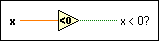

Less Than 0? Function
Owning Palette: Comparison Functions
Requires: Base Development System
Returns TRUE if x is less than 0. Otherwise, this function returns FALSE.
The connector pane displays the default data types for this polymorphic function.

 Add to the block diagram Add to the block diagram |
 Find on the palette Find on the palette |